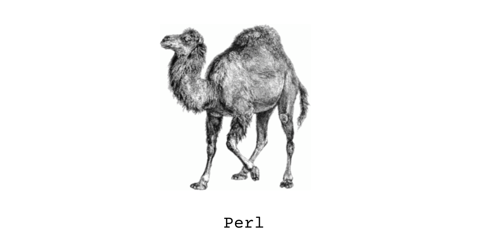
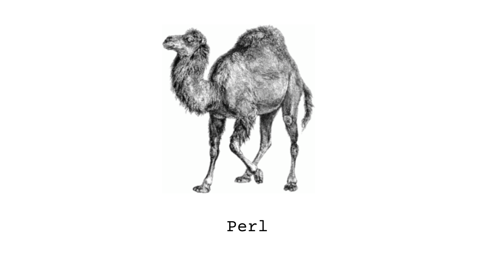

Custom DNA/mRNA Sequence Mapper
 

This Perl script, although less than 50 lines in total, was initially very challenging for me to work on. Why? Well, as a computer science student, I had no idea what my biology professor (who challenged me in writing this script) was asking for. However, I began to realize that I didn't have to be an expert in the life sciences to work on this. I learned that working in interdisciplinary environments is definitely possible. Check out my GitHub below for a better explanation!